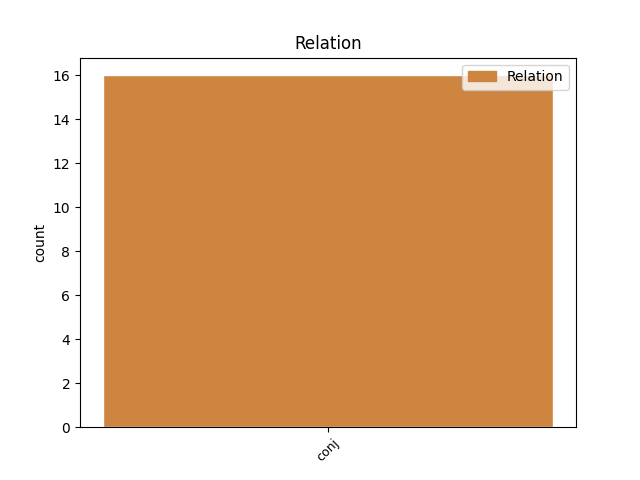
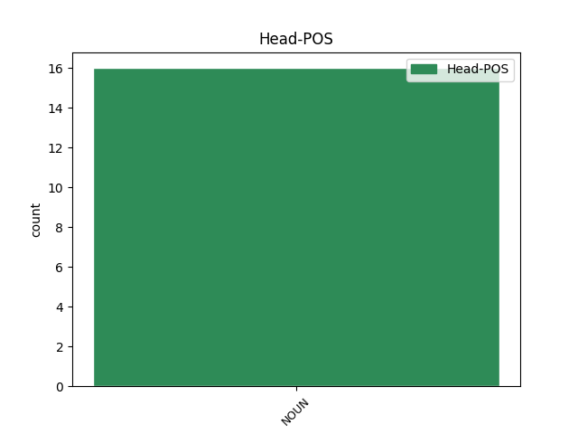
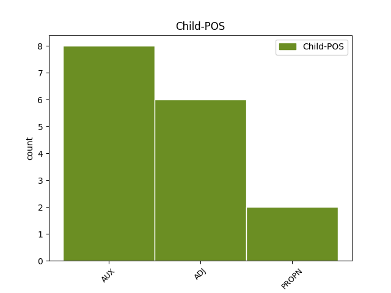

Distribution of features within this leaf



Agreement Rules sorted by frequency.
- When the dependent token is the conjunct(conj) of the head token, and the head token is NOUN and the dependent token is AUX.
1 сѫсѣди сѫсѣдъ NOUN Nb Case=Nom|Gender=Masc|Number=Plur 0 _ _ _
2 же _ _ _ _ 0 _ _ _
3 и _ _ _ _ 0 _ _ _
4 иже _ _ _ _ 0 _ _ _
5 и _ _ _ _ 0 _ _ _
6 бѣахѫ бꙑти AUX V- Aspect=Imp|Mood=Ind|Number=Plur|Person=3|Tense=Past|VerbForm=Fin|Voice=Act 1 conj _ ref=JOHN_9.8
7 видѣли _ _ _ _ 0 _ _ _
8 прѣжде _ _ _ _ 0 _ _ _
9 ѣко _ _ _ _ 0 _ _ _
10 слѣпъ _ _ _ _ 0 _ _ _
11 бѣ _ _ _ _ 0 _ _ _
12 г҃лаахѫ _ _ _ _ 0 _ _ _
1 обаче _ _ _ _ 0 _ _ _
2 не _ _ _ _ 0 _ _ _
3 моѣ _ _ _ _ 0 _ _ _
4 волѣ волꙗ NOUN Nb Case=Nom|Gender=Fem|Number=Sing 0 _ _ _
5 нъ _ _ _ _ 0 _ _ _
6 твоѣ твои ADJ Ps Case=Nom|Gender=Fem|Number=Sing|Person=2|Poss=Yes 4 conj _ ref=LUKE_22.42
7 да _ _ _ _ 0 _ _ _
8 бѫдетъ _ _ _ _ 0 _ _ _
1 Бꙑстъ _ _ _ _ 0 _ _ _
2 въ _ _ _ _ 0 _ _ _
3 дьни _ _ _ _ 0 _ _ _
4 ирода _ _ _ _ 0 _ _ _
5 цѣсѣрѣ _ _ _ _ 0 _ _ _
6 июдеиска _ _ _ _ 0 _ _ _
7 ꙇереи _ _ _ _ 0 _ _ _
8 единъ _ _ _ _ 0 _ _ _
9 именемъ _ _ _ _ 0 _ _ _
10 захариѣ _ _ _ _ 0 _ _ _
11 отъ _ _ _ _ 0 _ _ _
12 ефимѣриѩ _ _ _ _ 0 _ _ _
13 авиѣнѧ _ _ _ _ 0 _ _ _
14 ꙇ _ _ _ _ 0 _ _ _
15 жена жена NOUN Nb Case=Nom|Gender=Fem|Number=Sing 0 _ _ _
16 его _ _ _ _ 0 _ _ _
17 о҃тъ _ _ _ _ 0 _ _ _
18 дъштеръ _ _ _ _ 0 _ _ _
19 арѡнь _ _ _ _ 0 _ _ _
20 ꙇ _ _ _ _ 0 _ _ _
21 имѧ _ _ _ _ 0 _ _ _
22 еи _ _ _ _ 0 _ _ _
23 елисаветъ елисаветь PROPN Ne Case=Nom|Gender=Fem|Number=Sing 15 conj _ ref=LUKE_1.5
Disagree Examples:
1 не _ _ _ _ 0 _ _ _
2 имѫштю _ _ _ _ 0 _ _ _
3 же _ _ _ _ 0 _ _ _
4 емоу _ _ _ _ 0 _ _ _
5 въздати _ _ _ _ 0 _ _ _
6 повелѣ _ _ _ _ 0 _ _ _
7 г҃ъ _ _ _ _ 0 _ _ _
8 его _ _ _ _ 0 _ _ _
9 да _ _ _ _ 0 _ _ _
10 продадѧтъ _ _ _ _ 0 _ _ _
11 і _ _ _ _ 0 _ _ _
12 и _ _ _ _ 0 _ _ _
13 женѫ _ _ _ _ 0 _ _ _
14 его _ _ _ _ 0 _ _ _
15 и _ _ _ _ 0 _ _ _
16 чѧда чѧдо NOUN Nb Case=Acc|Gender=Neut|Number=Plur 0 _ _ _
17 ꙇ _ _ _ _ 0 _ _ _
18 вьсе вьсь ADJ Px Case=Acc|Gender=Neut|Number=Sing 16 conj _ ref=MATT_18.25
19 елико _ _ _ _ 0 _ _ _
20 имѣаше _ _ _ _ 0 _ _ _
21 ꙇ _ _ _ _ 0 _ _ _
22 отъдати _ _ _ _ 0 _ _ _
23 й _ _ _ _ 0 _ _ _
1 сътъникъ сътьникъ NOUN Nb Case=Nom|Gender=Masc|Number=Sing 0 _ _ _
2 же _ _ _ _ 0 _ _ _
3 и _ _ _ _ 0 _ _ _
4 иже _ _ _ _ 0 _ _ _
5 бѣхѫ бꙑти AUX V- Aspect=Imp|Mood=Ind|Number=Plur|Person=3|Tense=Past|VerbForm=Fin|Voice=Act 1 conj _ ref=MATT_27.54
6 съ _ _ _ _ 0 _ _ _
7 нимъ _ _ _ _ 0 _ _ _
8 стрѣгѫште _ _ _ _ 0 _ _ _
9 и҃са _ _ _ _ 0 _ _ _
10 видѣвъше _ _ _ _ 0 _ _ _
11 трѫсъ _ _ _ _ 0 _ _ _
12 и _ _ _ _ 0 _ _ _
13 бꙑвъшаа _ _ _ _ 0 _ _ _
14 оубоѣшѧ _ _ _ _ 0 _ _ _
15 сѧ _ _ _ _ 0 _ _ _
16 ѕѣло _ _ _ _ 0 _ _ _
17 г҃лѭще _ _ _ _ 0 _ _ _
1 сътъникъ _ _ _ _ 0 _ _ _
2 же _ _ _ _ 0 _ _ _
3 и _ _ _ _ 0 _ _ _
4 иже _ _ _ _ 0 _ _ _
5 бѣхѫ _ _ _ _ 0 _ _ _
6 съ _ _ _ _ 0 _ _ _
7 нимъ _ _ _ _ 0 _ _ _
8 стрѣгѫште _ _ _ _ 0 _ _ _
9 и҃са _ _ _ _ 0 _ _ _
10 видѣвъше _ _ _ _ 0 _ _ _
11 трѫсъ трѫсъ NOUN Nb Case=Acc|Gender=Masc|Number=Sing 0 _ _ _
12 и _ _ _ _ 0 _ _ _
13 бꙑвъшаа бꙑти AUX V- Case=Acc|Gender=Neut|Number=Plur|Strength=Weak|Tense=Past|VerbForm=Part|Voice=Act 11 conj _ ref=MATT_27.54
14 оубоѣшѧ _ _ _ _ 0 _ _ _
15 сѧ _ _ _ _ 0 _ _ _
16 ѕѣло _ _ _ _ 0 _ _ _
17 г҃лѭще _ _ _ _ 0 _ _ _
1 въстанетъ _ _ _ _ 0 _ _ _
2 бо _ _ _ _ 0 _ _ _
3 ѩзꙑкъ _ _ _ _ 0 _ _ _
4 на _ _ _ _ 0 _ _ _
5 ѩ҃зкъ _ _ _ _ 0 _ _ _
6 ꙇ _ _ _ _ 0 _ _ _
7 ц҃срство цѣсарьство NOUN Nb Case=Nom|Gender=Neut|Number=Sing 0 _ _ _
8 на _ _ _ _ 0 _ _ _
9 ц҃срство _ _ _ _ 0 _ _ _
10 ꙇ _ _ _ _ 0 _ _ _
11 бѫдѫтъ бꙑти AUX V- Mood=Ind|Number=Plur|Person=3|Tense=Fut|VerbForm=Fin|Voice=Act 7 conj _ ref=MARK_13.8
12 трѫси _ _ _ _ 0 _ _ _
13 по _ _ _ _ 0 _ _ _
14 мѣста _ _ _ _ 0 _ _ _
15 ꙇ _ _ _ _ 0 _ _ _
16 бѫдѫтъ _ _ _ _ 0 _ _ _
17 глади _ _ _ _ 0 _ _ _
18 и _ _ _ _ 0 _ _ _
19 мѧтежи _ _ _ _ 0 _ _ _
1 ръцѣте _ _ _ _ 0 _ _ _
2 оученикомъ оученикъ NOUN Nb Case=Dat|Gender=Masc|Number=Plur 0 _ _ _
3 его _ _ _ _ 0 _ _ _
4 и _ _ _ _ 0 _ _ _
5 петрови петръ PROPN Ne Case=Dat|Gender=Masc|Number=Sing 2 conj _ ref=MARK_16.7
6 ѣко _ _ _ _ 0 _ _ _
7 варѣатъ _ _ _ _ 0 _ _ _
8 вꙑ _ _ _ _ 0 _ _ _
9 въ _ _ _ _ 0 _ _ _
10 галилеи _ _ _ _ 0 _ _ _